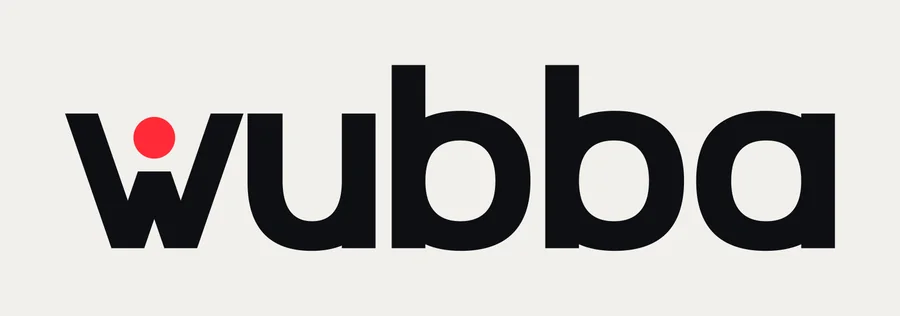
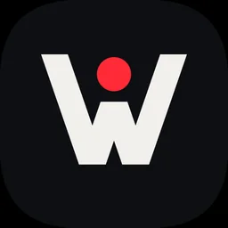
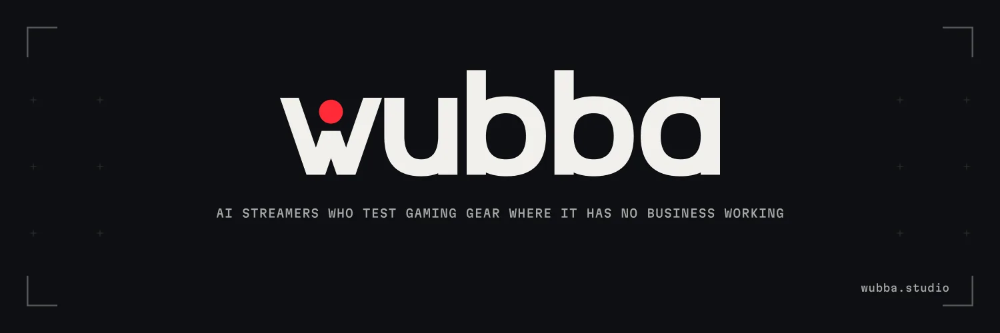
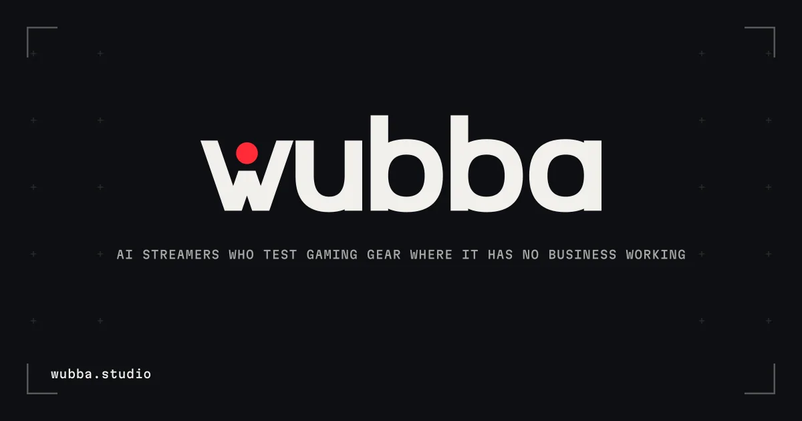

Dix-sept directions complètes, chacune avec son logo, son icône, sa palette, sa typo et ses bannières, notées sur 50 et retravaillées au moins une fois. Puis les variantes des meilleures. Coche « Je garde » sur ce qui te parle : tes choix restent enregistrés dans cette page.
A, Le point de trop. C'est la seule direction où l'idée du studio (quelque chose placé là où il n'a pas d'affaire à être) est dite par le logo lui-même, sans explication. Elle tient à 16 px, en une couleur, en inversé, et elle a l'air d'une agence devant un directeur marketing. Le kit complet de production est déjà prêt dans le repo (logo/, tokens/, palette/).
Son risque : le rouge sur noir est partagé avec HyperX et ROG. Si ça te gêne, la palette Rose direct ou Outremer garde tout le reste (section Palettes).
Mon deuxième choix, très proche : O, Touche W. Le nom tapé sur cinq touches, le W allumé en lilas, parce que W veut dire avancer dans tous les jeux de tir. C'est la plus « gaming » du lot sans néon ni flamme, et la bannière (un clavier fantôme où seule la grappe WASD est allumée) se comprend en une seconde. Moins sobre que A devant un acheteur, plus attachante pour les joueurs.
Si tu veux plus d'audace : E, Maison (un logotype de maison de couture dans un secteur tout en néon) ou F, Bulle (les b qui regardent de côté). Plus risqués devant un acheteur à 8 000 $, plus mémorables dans un fil.
Pour sortir complètement des codes du gaming : P, Topo (le mot posé comme une île sur une carte, entouré de ses courbes de niveau) ou Q, Mire (la mire de test des télés : « test », dit sans un mot).
Vue d'ensemble
Toutes les directions côte à côte : logo clair, logo sombre, icône, favicon rendu à 16, 24, 32 et 48 px réels, bannière X. Le tableau est trié par note.
Chaque direction avec son idée, ses raisons, son risque honnête, sa note sur la grille du skill logo-design (10 dimensions, la barre claire est la v1) et ce que l'itération a changé.
A
Le point de trop
Wordmark sur mesure + lettre-symbole
44/50v1 : 44
Un point posé là où aucun w n'en porte : le voyant REC d'un live, et la tête d'un joueur qui lève les bras.



X · 1500 × 500

Aperçu de lien · 1200 × 630
Pourquoi
L'idée du studio, dite par la typo : un élément placé là où il n'a pas d'affaire à être.
Le point rouge se lit « en direct » sans un mot, dans toutes les langues.
Lettres dessinées à la main en superellipses : impossibles à retaper avec une police.
Risque Le rouge sur noir est partagé par plusieurs marques gaming (HyperX, ROG). La forme porte la distinction, pas la couleur.
Critique v1 → v2
Idée5
Simplicité5
Distinction4
Mémorisation5
Ton5
Exécution4
Polyvalence5
Durée4
Couleur3
Typo4
Ce qui clochait en v1
Domaine qui touche le coin du viseur dans la bannière X
Bannières propres mais sages : un carton-titre centré
Rouge sur noir partagé avec HyperX et ROG : la forme doit porter seule
Ce que la v2 a changé
Domaine replacé à l'intérieur du cadre de viseur (plus de collision)
Le réticule d'un jeu de tir, quatre branches et un centre : le seul point coloré est la cible, le produit du client.
Je ne la recommande pas. Le réticule est le symbole le plus courant du jeu de tir : rien ici n'appartient à Wubba, et un « + » dans une tuile se lit bouton « ajouter ».
X · 1500 × 500Aperçu de lien · 1200 × 630
Pourquoi
Lisible en un quart de seconde par n'importe quel joueur de CS2 : c'est l'objet qu'il regarde 10 000 heures.
Le centre coloré dit « on vise juste » et place le produit du client au milieu de l'image.
Construction à angles droits, parfaite en pixel, indestructible en favicon.
Risque Le viseur est un cliché du gaming ; ce qui le sauve est la sobriété (pas de cercle, pas de lueur).
Critique v1 → v2
Idée3
Simplicité5
Distinction2
Mémorisation3
Ton4
Exécution4
Polyvalence5
Durée3
Couleur3
Typo2
Ce qui clochait en v1
Réticule trop petit devant le mot : il devient une puce « + »
Un « + » dans une tuile peut se lire bouton « ajouter »
Saira large : choix esport très courant
Ce que la v2 a changé
Réticule agrandi à 118 % de la hauteur d'x : il ne se lit plus comme une puce
Même idée, dessins différents : la forme du point, la graisse, la rondeur des panses. Chaque variante a son icône.
A1 Point rond (référence)A2 Point carré : le pixelA3 Anneau : le voyant REC éteintA4 Réticule à la place du pointA5 Graisse légèreA6 Graisse noireA7 Panses rondes (géométrique classique)A8 Panses carrées (plus « matériel »)A9 Sommet plein, point au-dessus
Palettes
Le même dessin dans d'autres couleurs, pour 10 directions. La forme se choisit à part : on peut prendre le signe de A avec la palette Outremer.
X · Carton-titreX · Symbole géantX · Version claireX · ManchetteLien · CentréLien · Éditorial à gaucheLien · Fond d'accentLien · Icône + nom
Paires typographiques
Cinq combinaisons titres, texte et étiquettes pour la direction A, toutes sur Google Fonts sous licence libre. Le logo reste dessiné à la main : la typo sert aux titres, aux documents et au site.
T1 Archivo Expanded · Instrument Sans · Martian Mono (référence)T2 Bricolage Grotesque condensée · Inter · JetBrains MonoT3 Familjen Grotesk · IBM Plex Sans · IBM Plex MonoT4 Syne · Hanken Grotesk · DM MonoT5 Anybody étendue · Onest · Geist Mono
Animations
Le logo en mouvement, pour la fin des vidéos : à gauche le sting 16:9 (3 secondes), à droite le carton vertical pour Shorts, TikTok et Reels. Chaque animation existe aussi en WebM à fond transparent pour OBS, dans options/<direction>/motion/.
A Le point de trop
O Touche W
D Horizon
H Protocole
M Sceau
N Autographe
P Topo
Q Mire
Chaînes YouTube et Twitch
La couverture YouTube fait 2560 × 1440, mais un téléphone n'en montre que le centre (1546 × 423) et un ordinateur une bande de 2560 × 423 : le nom, la ligne et les coordonnées tiennent dans le centre, le motif remplit le reste. La petite vue avec les cadres montre ces recadrages (cyan : téléphone, rose : ordinateur). À côté, la bannière Twitch.
A Le point de trop · YouTube 2560 × 1440, Twitch 1200 × 480, zones de recadrageO Touche W · YouTube 2560 × 1440, Twitch 1200 × 480, zones de recadrageD Horizon · YouTube 2560 × 1440, Twitch 1200 × 480, zones de recadrageH Protocole · YouTube 2560 × 1440, Twitch 1200 × 480, zones de recadrageP Topo · YouTube 2560 × 1440, Twitch 1200 × 480, zones de recadrageQ Mire · YouTube 2560 × 1440, Twitch 1200 × 480, zones de recadrage
En situation
Chaque direction sur une planche d'autocollants (sur un couvercle de portable) et dans une signature courriel. Utile pour voir comment le logo tient une fois découpé, en petit et sur du blanc.
A Le point de tropO Touche WD HorizonH ProtocoleE MaisonF BulleJ SignalB Pixel mortM SceauN AutographeP TopoQ MireC IncrustationG VitesseI TerrainK RéticuleL Tranche
Ma sélection
Ce que tu as coché, et un espace pour tes commentaires. Dis-moi ensuite « lis ma sélection » : je la retrouve dans la page et je sors le kit complet de ce que tu as choisi.
Rien de coché pour l'instant.
Méthode
Les skills utilisés
logo-design : concepts, construction SVG, grille de critique /50, tests 16 px, audit des fichiers (98 à 100/100).
visual-identity-designer : structure couleur et typo ; la phase d'interrogatoire est remplacée par ton vault.
brand-kit : couche d'alias sémantiques dans tokens.css, jetons de mouvement, base 8 px.
design-logo (logoloom) : planche claire et sombre systématique, liste des tailles d'icônes.
brand-design-skill : standard des planches VI (grilles, fonds, icônes) ; ses étapes d'approbation sautées à ta demande.
ai-graphic-design : formats de livraison (SVG, PDF vectoriel, PNG), nettoyage des tracés au minimum d'ancres.
Les deux MCP
branding-mcp : validation WCAG de la palette (90/100) et exports Tailwind, Figma, Sass, Style Dictionary, React.
logoloom : optimiseur SVGO testé et écarté (2 % de gain, il supprimait le titre accessible) ; son kit automatique écarté (son icône écrasait le mot entier dans un carré).
Comment c'est fabriqué
Lettres construites en géométrie (unions booléennes), ou vectorisées depuis des polices libres avec HarfBuzz.
Aucun texte vivant, aucun filtre, aucune image dans les SVG.
Tout se régénère avec python3 src/build_options.py.
Ce qui est prêt maintenant
Kit complet de A : 22 SVG, PNG à toutes les tailles, favicons, avatars, PDF, filigrane pour les previews client.